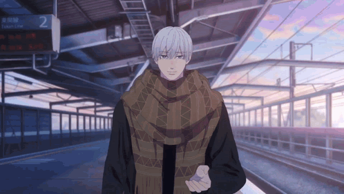

“Sign language is universal across the world” is a very
common misunderstanding of sign languages, like spoken languages, sign
languages differ by countries and regions. Japanese sign language (JSL) or
Nihon Shuwa (手話) is also
a language of its own. There is another commonly used “sign language” Taiou
Shuwa (manually coded Japanese), is not a unique language. It is signed
Japanese, which borrows signs from JSL, however this causes conflicts in
grammar from both languages, making Taiou Shuwa harder to understand for Deaf
people in certain cases. It is usually used by people with acquired hearing
disabilities, who still use spoken Japanese as part of their communication
methods.
Elements of JSL
Similar
to most languages, JSL consists of words (signs) and grammar linking the words
together. Most signs originate from actions, appearance of objects, or even
kanji (Chinese characters used in Japanese) shapes. Some signs also consists of
mouthing (口話), which uses the movement and shape of the
mouth for signs, especially to distinguish between signs of same gesture, which
is much more common in JSL than in other sign languages, such as Americal Sign
Language (ASL).
Action
Bicycle (自転車)
The JSL of bicycle resembles the movement of the pedals.
Finger letter (指文字, yubimoji) is another important part of JSL, which is the
set of hand gestures corresponding to the Japanese written characters - kana,
unlike the written kana system with 2 sets of identically spoken but
differently written kana, katakana and hiragana (see right image), yubimoji only has 1 set (see left image), like
how kana is treated in spoken language. Yubimoji is mainly used to sign names,
foreign words and unusual words.
In comparison to finger spelling in other
languages, JSL has 46 signs (yubimoji), which is much more than that of most
sign languages, for example, ASL, with 26 finger spelling signs only (see right image).
Babel (2006) was a highly acclaimed film nominated for
multiple Academy Awards. Featuring multiple strands of stories and a relatively
large number of characters, Babel was a complex, tragic story about humanity.
JSL was one of the significant elements in the film as one of the major
supporting characters, Chieko Wataya, was deaf and non-verbal.
A Silent Voice (2016) was a Japanese animated film base on a
manga of the same name by Yoshitoki Ōima, who is a daughter of a sign language
interpreter. The film portraits a former bully (Shōya Ishida), who decided to
ask for forgiveness from the deaf girl (Shōko Nishimiya) he bullied and make
amends. In the film, the protagonists often communicate in JSL.
Sign of affection was a manga series by Suu Morishita and
was later adapted into an anime TV series in January 2024. The story revolves
around a 19-year-old University fresher (Yuki Itose) with congenital hearing
loss as she narrates her world, and the people around her. In the series, Yuki
often uses JSL with her crush and some of her friends.

Sign Language Education in Japan
There are currently 110 public schools for Deaf or
hard-to-hear (D/HH) students, however it is to be noted that around half of the
deaf students enrolled in regular schools due to different circumstances. These
special schools use a “total communication” approach where a mix of cued speech,
Taiou Shuwa and JSL is used in teaching. Since most teaching staff are not
D/HH, and the education direction decided by the government, most staff speak
and sign at the same time, which Taiou Shuwa is better for. Although Taiou
Shuwa is easier for the teaching staff, it is harder to understand for most
deaf children, as it is unnatural as a language. The use of JSL or Taiou Shuwa
in deaf education has been an ongoing debate for long, and it is to hope that
an era of more JSL oriented schools would bloom, that deaf children in Japan
could receive education best suited for them.